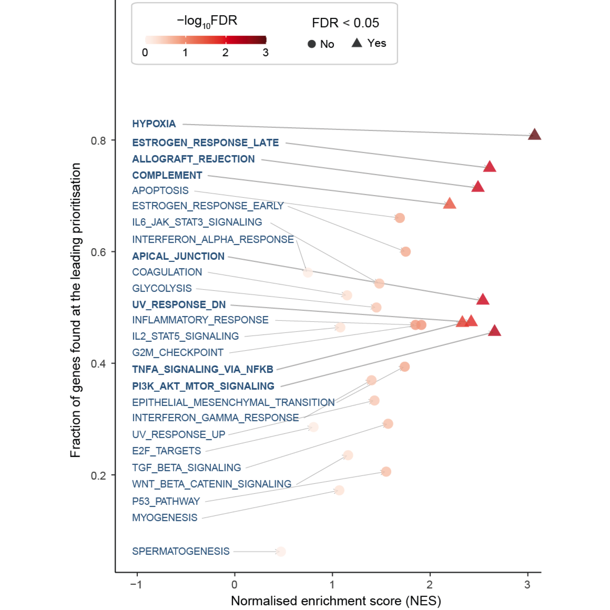

Section 3 Molecular hallmarks

Figure 3.1: Scatter plot of molecular hallmark enrichments, including normalised enrichment score (x-axis), fraction of hallmark genes found at the leading prioritisation (y-axis), and the enrichment significance (FDR) calculated using gene set enrichment analysis (GSEA).
Notably, the column Fraction refer to the fraction of hallmark genes found at the leading prioritisation.